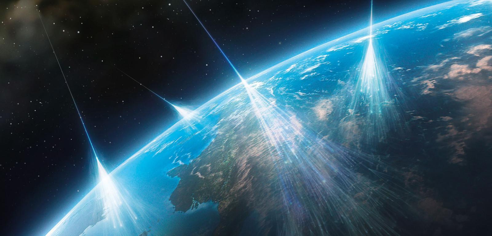
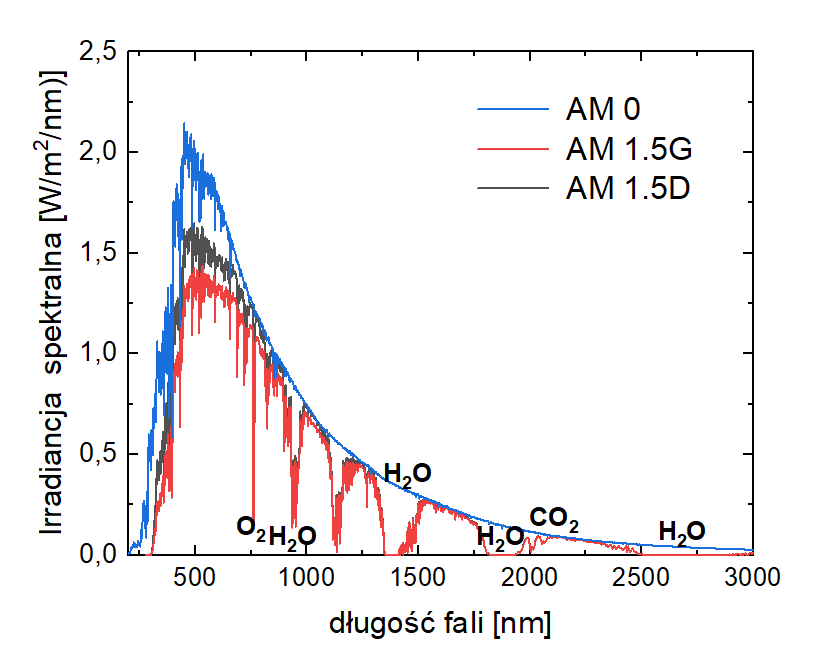
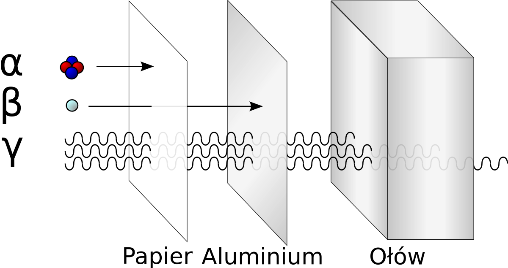
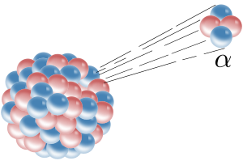
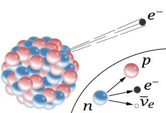
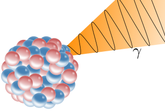

Spis treści
Promieniowanie naturalne
Promieniowanie naturalne to promieniowanie jonizujące pochodzące wyłącznie ze źródeł naturalnych stanowiące źródło dawki naturalnej.
Promieniotwórczość naturalna pochodzi z naturalnych pierwiastków radioaktywnych obecnych w glebie, skałach, powietrzu i wodzie:
Promieniotwórczość naturalna pochodzi z naturalnych pierwiastków radioaktywnych obecnych w glebie, skałach, powietrzu i wodzie:
- Obecnych w minerałach, przyswajanych przez rośliny i zwierzęta, a także używanych jako materiały konstrukcyjne
- Syntezowanych w atmosferze (i przenikających do hydrosfery) wskutek reakcji składników atmosfery z promieniowaniem kosmicznym
- Promieniowanie przenikłe do środowiska wskutek działalności przemysłowej człowieka
Przykłady naturalnych źródeł promieniowania (w bekerelach):
| Źródło | akt. promieniotwórcza |
|---|---|
| banan | 125 Bq/kg |
| mleko | 50 Bq/l |
| woda morska | 12 Bq/l |
| granit | 7 000 Bq/kg |
| popiół węglowy | 2 000 Bq/kg |
| 5-letnie dziecko | 600 Bq |
| dorosła osoba (70 kg) | 10 000 Bq |
Promieniowanie kosmiczne
Promieniowanie kosmiczne to promieniowanie złożone, zarówno korpuskularne jak i elektromagnetyczne, docierające do Ziemi z otaczającej ją przestrzeni kosmicznej. Korpuskularna część promieniowania składa się głównie z protonów (90% cząstek), cząstek alfa
(9%), elektronów (ok. 1%) i nielicznych cięższych jąder. Promieniowanie docierające bezpośrednio z przestrzeni kosmicznej nazywa się promieniowaniem kosmicznym pierwotnym. Cząstki docierające do Ziemi w wyniku reakcji promieniowania
kosmicznego pierwotnego z jądrami atomów gazów atmosferycznych stanowią promieniowanie wtórne.

Zobrazowanie promieni kosmicznych
Promieniowanie słoneczne
Promieniowaniem słonecznym jest strumień fal elektromagnetycznych i cząstek elementarnych (promieniowanie korpuskularne) docierający ze Słońca do Ziemi. Natężenie promieniowania słonecznego docierającego do górnych granic atmosfery dla średniej odległości
Ziemia-Słońce wynosi 1366,1 W/m² i nazywane jest stałą słoneczną. Natężenie promieniowania słonecznego zmienia się w cyklu rocznym ze względu na zmiany odległości pomiędzy Ziemią a Słońcem w zakresie ±3,4%.

Rozkład spektralny promieniowania słonecznego
Promieniowanie atmosferyczne
Promieniowanie atmosferyczne obejmuje całość zjawisk promieniowania elektromagnetycznego w atmosferze Badanie tych procesów jest działem fizyki atmosfery; zajmuje się m.in. optyką atmosferyczną, optyką warstwy ocean-atmosfera, równaniem transferu promieniowania,
rozpraszaniem na hydrometeorach i molekułach powietrza, zjawiskami optycznymi w atmosferze. Jest to podstawa zrozumienia widzialności w atmosferze, oddziaływania promieniowania słonecznego z chmurami i aerozolami, obserwacji satelitarnych,
aktywnej i pasywnej teledetekcji, oraz zrozumienia bilansu energetycznego ziemi. Mimo że operuje klasycznymi metodami fizyki, rozwinęła specjalistyczne metody pomiarowe i teoretyczne.
Promieniowanie jądrowe
To emisja cząstek lub promieniowania elektromagnetycznego (promieniowanie gamma) przez jądra atomów. Promieniowanie zachodzi podczas przemiany promieniotwórczej lub w wyniku przejścia wzbudzonego jądra do stanu o niższej energii. Rodzaj wysyłanego promieniowania
oraz jego energia zależy od rodzaju przemiany jądrowej.

Przenikliwość rodzajów promieniowania jądrowego
Podział promieniowania jądrowego:
Promieniowanie alfa - promieniowanie jonizujące emitowane przez rozpadające się jądra atomowe, będące strumieniem cząstek alfa, które są jądrami helu. Cząstka alfa składa się z dwóch protonów i dwóch neutronów.
Ma ładunek dodatni i jest identyczna z jądrem atomu izotopu 4He, więc często oznacza się ją jako He2+. Nazwa pochodzi od greckiej litery α. Cząstki alfa są wytwarzane przez jądra pierwiastków promieniotwórczych, jak uran i rad. Proces
ten określa się jako rozpad alfa. Prędkość cząstek alfa wynosi około 15 tysięcy km/s (dla cząstki o energii 5,5 MeV), masa spoczynkowa: 4u, a ładunek elektryczny cząstek +2e.

Emisja cząstki alfa przez jądro atomowe
Promieniowanie beta - rodzaj przenikliwego promieniowania jonizującego wysyłanego przez promieniotwórcze jądra atomowe podczas przemiany jądrowej. Nazwa ma znaczenie historyczne – powstała, by odróżnić to
promieniowanie od mniej przenikliwego promieniowania alfa. Promieniowanie beta i alfa zarejestrowane były po raz pierwszy przez Becquerela, który opisał swoje wyniki w serii publikacji w latach 1896–1897. Oba rodzaje promieniowania
badał następnie Rutherford i w roku 1899 opisał ich różny charakter. Promieniowanie beta powstaje podczas rozpadu β. W zależności od rodzaju tego rozpadu, jest ono strumieniem elektronów (z rozpadu β−) lub pozytonów (z rozpadu β+)
poruszających się z prędkością porównywalną z prędkością światła w próżni. Promieniowanie to jest silnie pochłaniane przez materię.

Emisja elektronu podczas rozpadu β− jądra atomu. Elektron ten powstaje obok protonu i antyneutrina w wyniku rozpadu jednego z neutronów
Promieniowanie gamma - wysokoenergetyczna forma promieniowania elektromagnetycznego. W wielu publikacjach rozróżnienie promieniowania gamma oraz promieniowania X (rentgenowskiego) opiera się na ich źródłach,
a nie na długości fali. Promieniowanie gamma wytwarzane jest w wyniku przemian jądrowych albo zderzeń jąder lub cząstek subatomowych, a promieniowanie rentgenowskie – w wyniku zderzeń elektronów z elektronami powłok wewnętrznych lub
ich rozpraszaniu w polu jąder atomu. Promieniowanie gamma jest promieniowaniem jonizującym i przenikliwym. Promieniowanie gamma oznacza się grecką literą γ, analogicznie do korpuskularnego promieniowania alfa (α) i beta (β).

Promieniowanie gamma